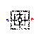
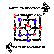
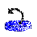

Ständig wird unter dem Spielbrett angezeigt, was geschieht. Ihr Konkurrent verkündet seinen Zug, indem er, "mein Zug sagt. Ich denke... ", Wenn das Display "Zug des Blauen" oder "Zug des Roten" anzeigt, sind Sie am Zug, wenn es Ihre Farbe ist.
Ihr Konkurrent zieht, indem er die Steine bewegt. Wenn Sie ungeduldig werden, können Sie die Animation überspringen und Ihren Zug direkt machen, indem Sie das Brett anklicken.
Es gibt drei Stadien im Spiel. In jedem Stadium schlagen Sie Steine, indem Sie eine Reihe von drei Steinen (eine Mühle) entlang einer Brettlinie bilden. Wann immer Sie ein oder zwei Mühlen bilden, müssen Sie einen gegnerischen Stein nehmen, indem Sie ihn anklicken. Geschlagene Steine werden vom Brett entfernt. Steine innerhalb der Mühlen sind vom Schlagen ausgenommen, außer wenn alle in Mühlen sind.
Stadium 1 fängt mit dem leeren Brett an. Mit jedem Zug setzen Sie einen Stein auf einem freien Brettschnittpunkt. Sie können Steine setzen, indem Sie sie von Ihrem Stapel auf das Spielfeld ziehen, oder Sie können den Zielpunkt anklicken.
Stadium 2 fängt an, wenn alle Steine gesetzt worden sind. Mit jedem Zug schieben Sie einen Stein entlang einer Brettlinie zu einem angrenzenden freien Punkt. Sie können gewinnen, indem Sie alle gegnerischen Steine einsperren.
Stadium 3: Wenn Sie nur noch drei Steine haben. Mit jedem Zug springen Sie mit Ihrem Stein auf einen freien Punkt. Ihre Steine können nicht eingesperrt werden, aber Sie verlieren, wenn Sie auf zwei Steine reduziert werden.
Mit den Symbolen auf der linken Seite des Brettes geben Sie folgende Befehle ein (sogar während der Animation):
 Beginnen Sie ein neues Spiel.
Ein Zug zurück.
Machen Sie einen Zug nochmals.
 Tauschen Sie die Seiten.
 Der Computer spielt für Sie
Klicken Sie eine römische Ziffer links neben dem Spiel an, um die Spiel-Stärke zu wählen.
Wenn Sie auf Stärke VII gewinnen, sind Sie ein Genie!
Viel Glück!
Instructions for the Visually Impaired
The Command Form provides accessibility to those who use a keyboard instead of a mouse.
It is designed to be used along with screen reader assistive technology.
When you use the Command Form the game is still presented visually, so your sighted friends can play along.
Before you enter a command you must place your screen reader in Forms Mode by pressing ENTER.
Once you are in Forms Mode you enter 1 to 4 letter commands followed by TAB.
After each command, there may be a delay while your computer plans its move.
Once your computer has a move,
feedback appears as a link from which you return to the Command Form by again pressing TAB.
Do not press ENTER unless you want to exit your screen reader's Forms Mode.
The following commands are available.
Command | Description. |
| N | New Game. |
| U | Undo. |
| R | Redo. |
| S | Swap Sides. |
| C | Have your computer move for you. |
| L | Display the level of difficulty. 1 is the default. |
| 1...7 | Set the level of difficulty. 7 is the hardest. |
| P | Display the last 3 moves. |
| B | Describe the board layout. |
| MOVE ENTRY |
When you enter a move you need to know how to identify board positions. The game board consists of 3 concentric squares with four spoke line segments joining the midpoints of their adjacent sides. Each of the resulting corners and intersections is a board position, making 24 in all. The 3 concentric squares are called X, Y and Z starting with the outer square. Positions on each square are called 1 to 8 starting at the upper left and going clockwise. Here are some examples. The upper left position of the outer square is called X1 and the lower right position of the middle square is called Y5. The left side of the middle square consists of positions Y1, Y8 and Y7. And the left spoke consists of positions X8, Y8 and Z8. To enter a placing or taking move, just enter its position. For example to place a piece on Y4 enter Y4. To enter a sliding or flying move enter both positions. For example to slide a piece from X2 to Y2 enter X2Y2. |
Merrelles should work with any screen reader compatible browser. In addition, the Java Plug In must be installed and enabled in your browser in order to play. Merrelles has been tested successfully with both Internet Explorer 6 and Firefox 2 and both JAWS 8 and Window-Eyes 6.
If you do not own a Nine Men's Morris board for the blind, you can make one easily.
First find some thick cardboard and cut out 2, 4, 6, and 8 inch squares.
Glue each square to the center of the next, keeping corners aligned.
The bottom 3 steps of the resulting pyramid delineate your 3 concentric playing squares X, Y and Z.
You may mark each playing position by sticking thumbtacks into steps X, Y and Z at their corners and midpoints.
Next, to make your playing pieces, find a discarded rubber mouse pad and cut out
9 circles and 9 squares 1 inch across.
Now you are ready to play!
Access the Command Form
Mühle-Links (Englisch)
Mühle-Applet Unterlagen
Mühle-Geschichtey
Mühle-Forschung
| Paul Emory Sullivan | Applet Merrelles und Maschine Game42. |
| Claire Debika Sullivan | Zeichnungen Papyrus und künstlerisches Design. |
| Manfred Nüscheler | Uebersetzung auf Deutsch (HTML). |
| Roswitha Findlay | Uebersetzung auf Deutsch (Applet). |
| Zoltan Gothard | Spielabstimmung und UI-Rat. |
| Ahdy Atalla | Spielabstimmung. |
| James P. Buzbee | Schriftkegel Kategorie Hershey. |
| Dr. A.V. Hershey | Schriftkegel Hershey. |
| James Hurt | Gotischer Italienischer Schriftkegel Hershey. |
| Die NASA | Teleskop Abbildungen Hubble. |
Schicken Sie Paul Emory Sullivan Ihre Antwort (Englisch)